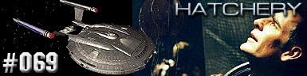
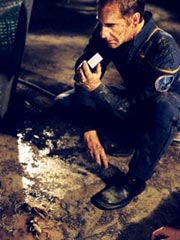
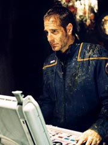
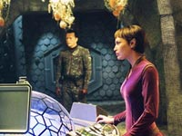

|
Enterprise
Temporada 3

Anlise do episdio por
Salvador Nogueira



|
MANCHETE
DO EPISDIO |
Comentrios:   
"Hatchery"
um episdio que at poderia ter funcionado, no fosse to
bvio. O maior mrito aqui a retratao do drama de um
motim, que aparece aqui muito mais evidente do que em episdios
anteriores. Mas no o suficiente para que o episdio mantenha
a mdia de qualidade de seus predecessores imediatos.
A resposta ao dilema vai se tornando to bvia ao longo do
episdio que, no que dependesse da audincia, o motim teria
comeado bem antes. Claro que um desavisado poderia supor que os
telespectadores, de um ponto de vista privilegiado, tinham
informaes que T'Pol, Trip e cia. no possuam. Mas no
verdade neste caso.
Tudo que ns sabemos o que eles sabem. E impressionante
como a tripulao s vai se lembrar de que Archer foi
"borrifado" por uma substncia estranha no berrio
na parte final do episdio. A audincia, em contrapartida, tem
isso em mente desde o incio. No foi algo discreto; foi
escandaloso. O capito at foi levado enfermaria logo aps a
contaminao.
Acho que poucas vezes vimos um caso to explcito de influncia
sobre o comportamento causada por algum contaminante aliengena
em Jornada nas Estrelas. Os exemplos clssicos, "The
Naked Time", da Srie Clssica, e "The
Naked Now", da Nova Gerao, embora pouco
discretos, no chegam nem perto de "Hatchery".
Por uma razo muito simples: naqueles casos, a audincia sabia
da contaminao, mas no os outros personagens. J aqui, todo
mundo est sabendo que Archer foi exposto a uma substncia
desconhecida... no d para acreditar.
Uma vez que os dois se unem para executar o motim, no
difcil convencer Malcolm Reed a se juntar a eles. Reed tambm
havia notado o comportamento estranho de Archer e chegou a ser
dispensado do servio, aps desacatar as instrues do
capito. Em seu lugar, Archer colocou o major Hayes, que ganhou
mais proeminncia no episdio.
A dinmica de Hayes com Reed mais uma vez destaque aqui. Os
dois parecem comear a adquirir um respeito mtuo, ainda que
tenham problemas em trabalhar juntos. De certa maneira, Reed pra
de ver Hayes como seu inimigo pessoal, e comea a encar-lo
apenas como um profissional com opinies e mtodos diferentes
dos dele. Isso fica claro quando os amotinados decidem atacar
Hayes, ou pedir que ele se junte ao motim. E a conversa posterior
entre o major e oficial de armamentos da Enterprise mostra que a
deciso tomada foi a correta --Hayes admite que, por sua tpica
formao militar, ele poderia muito bem ter se mantido ao lado
de Archer, mesmo percebendo o comportamento extico e arriscado
do capito.
Apesar de tudo isso, "Hatchery" tem um mrito no
contexto da temporada: ele faz uso de elementos fortemente ligados
ao arco Xindi para trazer alguma dramaticidade ao enredo. No
mnimo, serve como uma bela ponte para o episdio que promete
engatar a quinta marcha na caa da NX-01 arma de destruio
de massa Xindi. Prxima parada: Azati Prime.
Hayes - "I understand how
Captain Archer feels. If one of my subordinates disobeyed an order of
mine, I'd knock him on his ass."
("Eu entendo como o Capito Archer se sente. Se um dos meus
subordinados desobedecesse uma ordem minha, eu lhe daria um chute no
rabo.")
Archer - "There are rules even in war. We have to save those
children."
("Mesmo na guerra h regras. Ns temos que salvar aquelas
crianas.")
Tucker - "I'm not here
for fun. I'm here on official ships business, to get my neural pressure
session."
("Eu no estou aqui por diverso. Eu estou aqui em tarefa
oficial da nave, para ter minha sesso de massagem neural.")
 Este foi o ltimo episdio de Enterprise a ser filmado em 2003,
durante 11 a 19 de dezembro.
Este foi o ltimo episdio de Enterprise a ser filmado em 2003,
durante 11 a 19 de dezembro.
 O departamento de design de cenrios e maquilagem estiveram bem ativos
para o episdio. Herman Zimmerman providenciou a construo dos
interiores do shuttle insectide e as encubadoras, o que incluiu
diversos adereos relacionados aos Xindi-Insectides, providenciados
pelo artista de maquilagem Michael Westmore; a ps-produo se
encarregou de digitalmente inserir os Xindi-Insectides.
O departamento de design de cenrios e maquilagem estiveram bem ativos
para o episdio. Herman Zimmerman providenciou a construo dos
interiores do shuttle insectide e as encubadoras, o que incluiu
diversos adereos relacionados aos Xindi-Insectides, providenciados
pelo artista de maquilagem Michael Westmore; a ps-produo se
encarregou de digitalmente inserir os Xindi-Insectides.
 Rick Berman, sobre o episdio, "Archer desenvolve um inusitado e
protetor interesse por ovos Xindi encontrados em uma nave danificada, e
como resultado, surge a possibilidade de um motim a bordo".
Rick Berman, sobre o episdio, "Archer desenvolve um inusitado e
protetor interesse por ovos Xindi encontrados em uma nave danificada, e
como resultado, surge a possibilidade de um motim a bordo".
Histria de Andr Bormanis e
Mike Sussman
Roteiro de Andr Bormanis
Direo de Michael Grossman
Exibido em 25/02/2004
Produo: 069
Elenco:
Scott
Bakula como Jonathan Archer
Jolene Blalock como
T'Pol
John Billingsley
como Phlox
Anthony Montgomery
como Travis Mayweather
Connor Trinneer como
Charlie 'Trip' Tucker III
Dominic Keating como
Malcolm Reed
Linda Park como Hoshi Sato
Elenco convidado:
Steven Culp como Major Hayes
Daniel Dae Kim como Corporal Chang
Sean McGowan como Corporal Hawkins
Paul Eliopoulos como Tripulante 1